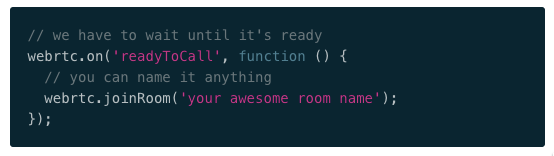

Twilio & WebRTC
Turning Your Browser
into a Phone
using Web Standards
by Carter Rabasa, Developer Evangelist, Twilio
@CarterRabasa
carter@twilio.com
github.com/crabasa
Twilio is Changing Communications Forever
By migrating the communications industry from legacy in hardware to its future in software.
7.22 billion
Source: International Business Times
Built on Web Standards

Webhooks
Inbound communications.


VOIP for browsers and native mobile apps

WebRTC
Realtime communication in the browser via open peer-to-peer protocols.
SimpleWebRTC.com

IsWebRTCReadyYet.com

REST API
Outbound communications.
JSON Web Tokens
Grants the browser superpowers.
Web Audio API
Thank You
carter@twilio.com